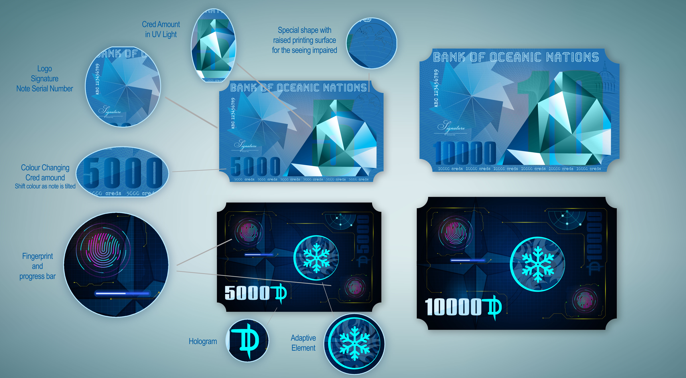

bookmark
Banknote Card
I have used a triangle abstract shape for the front side. The value is displayed on a top layer, with a very low opacity and a metallic finishing. On the left-hand side of the triangle shape, the logo of JON and other essential elements like signatures and numbers are displayed. On the back side, I have chosen a more futuristic interface that has changed since the first assessment. I used a dark blue gradient for the background inspired by underwater life. Submarine instruments decorate this side and the adaptive symbol is located on the centre. Unlike with the smaller banknotes, the theme colour does not change with the season of the year.
To reduce the risk of theft and the impact of accidental loss, cards require fingerprint authorisation. On the bottom right and top left corners there are two fingerprint icons, with a loading bar below the latter. During a transaction, the owner of the card and the receiver must place their fingers on the two icons at the same time for a few seconds. Once the progress bar is full, it flashes green which indicates that the transaction is completed, and the card is now registered to the receiver.
